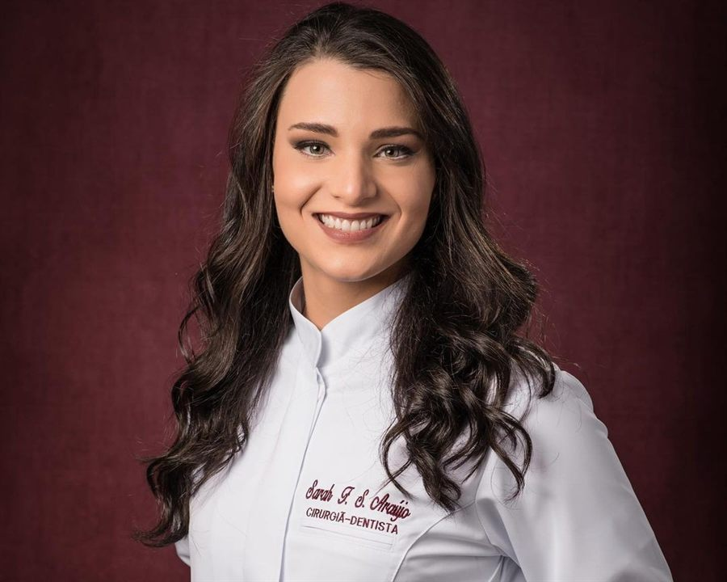

A Dra. Sarah é uma dentista altamente qualificada e dedicada, com experiência em diferentes áreas da odontologia. Natural de Belo Horizonte e formada em Odontologia em 2021 pela Universidade Luterana do Brasil (ULBRA) de Canoas, com diversos cursos de pós-graduação em áreas especializadas, ela une excelência técnica, atendimento humanizado e tratamentos modernos para promover saúde bucal e sorrisos bonitos e saudáveis.
Comprometida em oferecer um cuidado personalizado, a Dra. Sarah valoriza uma experiência acolhedora, a atenção aos detalhes e a segurança do paciente em cada etapa do tratamento.

Áreas em que a Dra. Sarah oferece um atendimento focado, moderno e personalizado.
IEO-BH - Instituto de Estudos Odontológicos
IEO-BH - Instituto de Estudos Odontológicos
Instituto Dra. Maria Rita